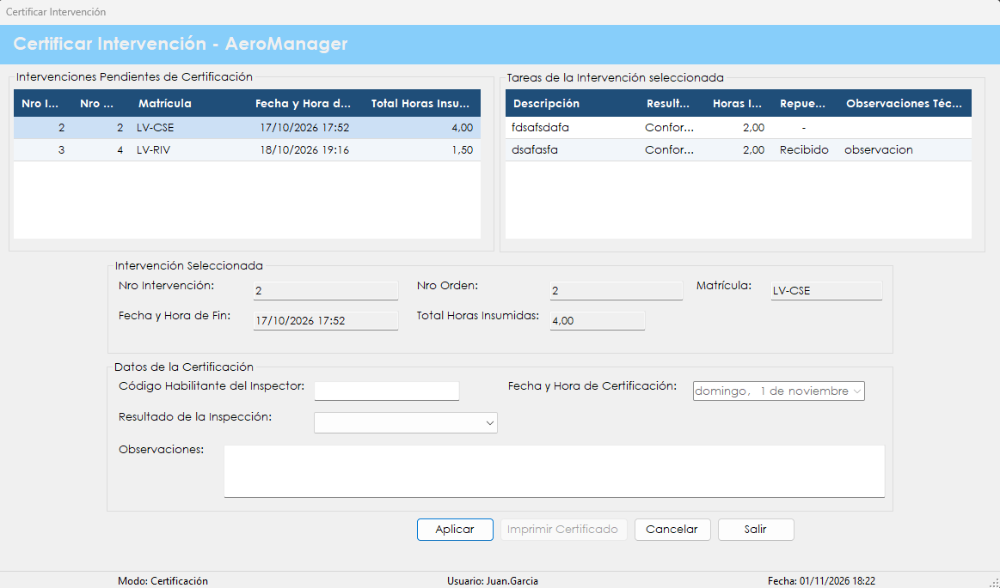

Es el último paso del mantenimiento: un inspector revisa el trabajo terminado y decide si la aeronave vuelve al servicio.
Una aeronave no vuelve a volar solo porque el técnico terminó su trabajo. La certificación es el control independiente que lo habilita: el inspector revisa la intervención y sus tareas, deja registrado el resultado y lo firma con su código habilitante.
El resultado define el estado de la aeronave. Con Satisfactorio queda En Servicio. Con No Satisfactorio queda Fuera de Servicio y hace falta una nueva orden de trabajo.
La certificación no se puede deshacer. Una vez registrada, se puede imprimir el certificado en PDF, que luego también está disponible en Certificados de intervención.
Desde el menú principal, en Mantenimiento de Aeronaves › Certificar Intervención. La opción aparece si el rol del usuario incluye la patente correspondiente.

| Control | Para qué se usa |
|---|---|
| Intervenciones Pendientes de Certificación | Grilla con Nro Intervención, Nro Orden, Matrícula, Fecha y Hora de Fin y Total Horas Insumidas de los trabajos finalizados sin certificar. Un clic carga la intervención. |
| Tareas de la Intervención seleccionada | Grilla con Descripción, Resultado Obtenido, Horas Insumidas, Repuestos Utilizados y Observaciones Técnicas. |
| Intervención Seleccionada | Muestra Nro Intervención, Nro Orden, Matrícula, Fecha y Hora de Fin y Total Horas Insumidas. No se puede editar. |
| Código Habilitante del Inspector | Código que acredita al inspector. Es obligatorio. |
| Resultado de la Inspección | Satisfactorio o No Satisfactorio. Es obligatorio. |
| Fecha y Hora de Certificación | La completa el sistema y no se puede cambiar. |
| Observaciones | Comentarios del inspector. Son opcionales. La tecla Enter agrega una línea. |
| Aplicar | Registra la certificación. |
| Imprimir Certificado | Se habilita después de certificar. Genera el certificado en PDF y lo abre. |
| Cancelar | Limpia la selección y los datos cargados. |
| Salir | Cierra la pantalla. También se activa con la tecla Esc. |
Atención. La certificación no se puede deshacer. Conviene revisar el resultado elegido antes de confirmar, porque cambia el estado de la aeronave.
| Situación | Qué significa y qué hacer |
|---|---|
| "Error al recuperar las intervenciones pendientes de certificación:" seguido del motivo | No se pudo cargar la grilla. Después de los dos puntos se indica la causa técnica. |
| "Error al recuperar las tareas de la intervención:" seguido del motivo | No se pudieron cargar las tareas. Después de los dos puntos se indica la causa técnica. |
| "Debe seleccionar una intervención de la grilla." | Hay que elegir una intervención antes de presionar Aplicar. |
| "Debe completar el código habilitante y el resultado de la inspección." | Falta alguno de los dos datos obligatorios. |
| "¿Certificar la intervención Nro" seguido del número, "de la aeronave" seguido de la matrícula, "con resultado" seguido del resultado, "? La aeronave quedará" seguido del estado, ". Esta acción no se puede deshacer." | El estado será En Servicio o Fuera de Servicio, según el resultado. Con No se puede corregir antes de registrar. |
| "La intervención seleccionada ya posee una certificación registrada." | Esa intervención ya fue certificada y no admite otra certificación. |
| "No puede certificar esta intervención porque la orden de trabajo está asignada a usted. Debe certificarla otro inspector." | Nadie puede certificar su propio trabajo. Tiene que hacerlo otro usuario. |
| "El registro fue modificado o ya no existe. Vuelva a buscarlo e intente nuevamente." | La grilla se actualiza. Hay que elegir de nuevo la intervención. |
| "La certificación de la intervención Nro" seguido del número, "quedó registrada, pero el estado de la aeronave no se actualizó." | La certificación es válida, pero la aeronave no cambió de estado. Hay que avisarle al administrador para revisarla. |
| "Certificación registrada correctamente. Nro de Certificación:" seguido del número, ". La aeronave queda En Servicio." | La aeronave vuelve a estar disponible. El número informado coincide con el de la intervención. |
| "Certificación registrada correctamente. Nro de Certificación:" seguido del número, ". La aeronave queda Fuera de Servicio y debe generarse una nueva orden de trabajo." | Hay que abrir otra orden en Generar orden de trabajo. El número informado coincide con el de la intervención. |
| "Error al registrar la certificación:" seguido del motivo | La certificación no se completó. Después de los dos puntos se indica la causa técnica. |
| "Debe registrar la certificación antes de imprimir el certificado." | Primero hay que certificar la intervención seleccionada. |
| "Error al generar el documento:" seguido del motivo | La certificación ya está registrada, pero no se pudo crear el PDF. Se puede reintentar o usar Certificados de intervención. |
| "La operación se registró correctamente, pero no pudo asentarse en la Bitácora:" seguido del motivo | La certificación se registró, pero el evento no quedó en la bitácora. Después de los dos puntos se muestra el motivo técnico. Conviene avisarle al administrador. |